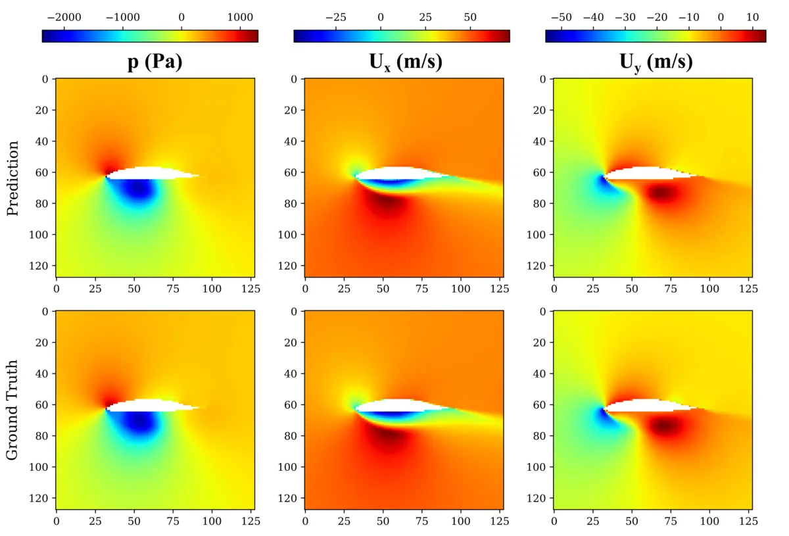
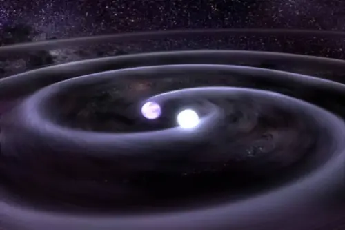
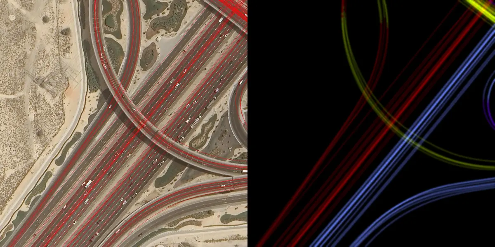
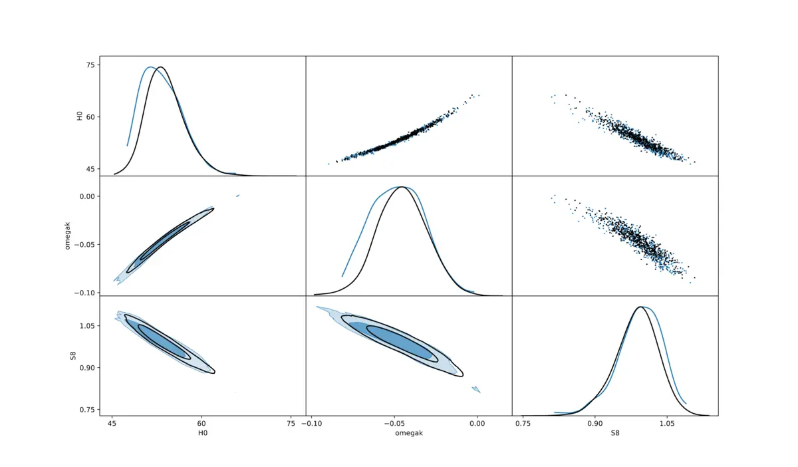

编程 / 框架Programming
- Python
- C++
- Mathematica
- SQL
- PyTorch
- TensorFlow
开放合作 · 北京海淀 Open to collaborate · Beijing
非雨 创始人 / CEO Founder & CEO of ThisRainIsNotARealRain
公司业务为二次元实体与商业化出版，以本体驱动的连续出版为核心方法。此前在 AI4Science 与计算机视觉方向从事研究与工程。 The company works in anime physical goods and commercial publishing, built on ontology-driven continuous publishing. Before this I worked in AI4Science and computer vision, in both research and engineering.
01 / About
我是非雨（ThisRainIsNotARealRain）的创始人兼 CEO。公司业务为二次元实体与商业化出版，以本体驱动的连续出版组织 IP 的开发节奏。此前的研究与工程背景在计算机视觉与多模态、AI4Science 与 Physics ML。 I’m the Founder and CEO of ThisRainIsNotARealRain. The company works in anime physical goods and commercial publishing, using ontology-driven continuous publishing to structure how an IP is developed. My research and engineering background is in computer vision and multimodal learning, AI4Science and physics ML.
方向Focus
二次元实体与商业化出版 / AIGC 系统 / 计算机视觉与多模态Anime goods & commercial publishing / AIGC systems / computer vision & multimodal
能力Strengths
模型研发、数据融合、可复现训练与评估、多GPU工作流Modeling, data fusion, reproducible training & evaluation, multi-GPU workflows
合作Collaboration
跨学科协作，把原型推进到可交付组件Cross-functional work from prototype to deployable components
02 / Experience
— 至今Present
非雨 ThisRainIsNotARealRain
—
MapTech · 北京Beijing
Science42.tech · 北京Beijing
Kavli Institute for Cosmology · 剑桥Cambridge
紫金山天文台 · 南京Purple Mountain Observatory · Nanjing
03 / Projects

将扩散模型与 Transformer 结合，用于 Reynolds-Averaged Navier–Stokes 空气动力学仿真（翼型流动）。 Diffusion Transformers for Reynolds-Averaged Navier–Stokes simulations of airfoil flows.

模拟多源引力波时序信号，训练 WGAN 以从信号中重建参数；使用 HPC 进行训练与可视化分析。 Simulated multi-source gravitational-wave time series and trained WGANs to reconstruct parameters; trained and analyzed on HPC.

面向大规模地理遥感任务（道路提取、轨迹建模、卫星影像理解）构建 VL/多模态训练与评估流程，包含 LoRA 与全参微调实验。 Built vision–language / multimodal pipelines for large-scale GIS and remote sensing tasks (road extraction, trajectory modeling, satellite understanding), including LoRA and full fine-tuning experiments.

在宇宙学推断中结合嵌套采样与机器学习（masked aggressive flow），用于后验分布生成与参数估计；并参与维护开源 Python 包。 ML-enhanced Bayesian inference for cosmology: nested sampling + masked aggressive flow for posterior generation and parameter inference; contributed to an open-source Python package.
04 / Education
Machine Learning and Big Data in the Physical Sciences · 物理系 Machine Learning and Big Data in the Physical Sciences · Department of Physics
Physics · 一等荣誉 Physics · First Class Honours
06 / Skills
07 / Contact
如需交流合作、项目讨论或学术/工程问题，欢迎通过邮件或社交平台联系我。 For collaboration, project discussions, or research/engineering topics, feel free to reach out via email or social platforms.
电话 +86 182 6056 8009 Phone +44 7410 915752